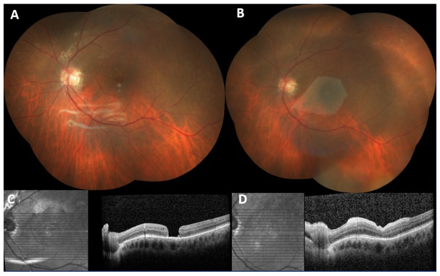
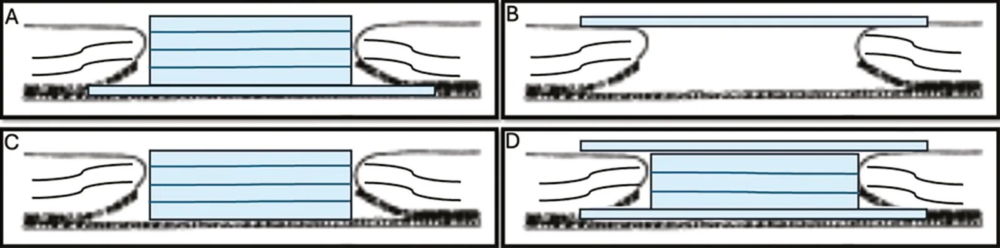
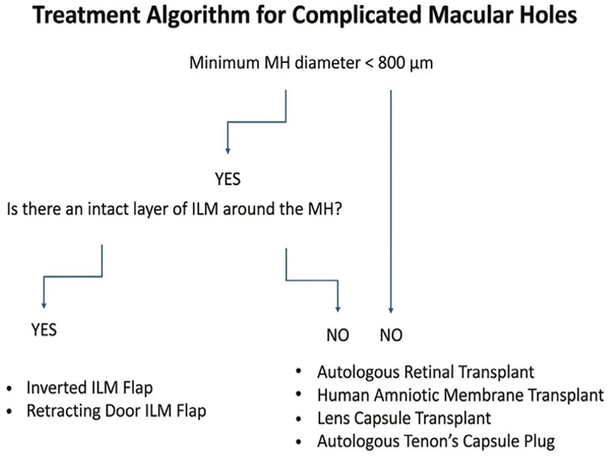
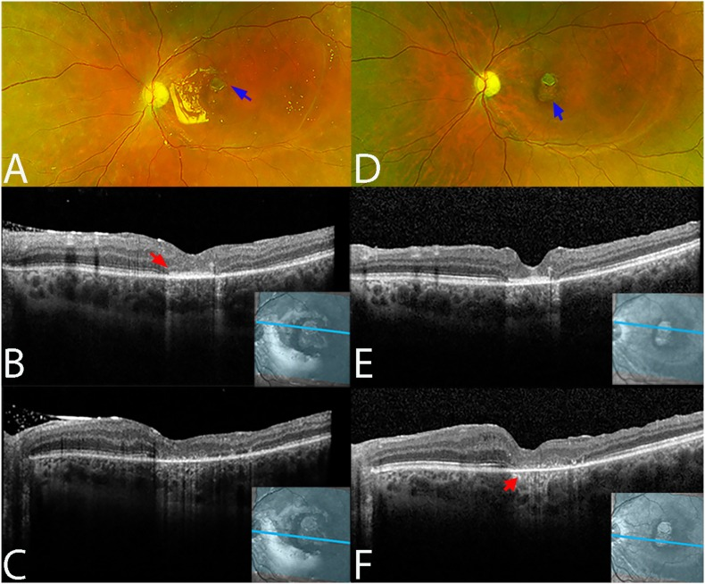
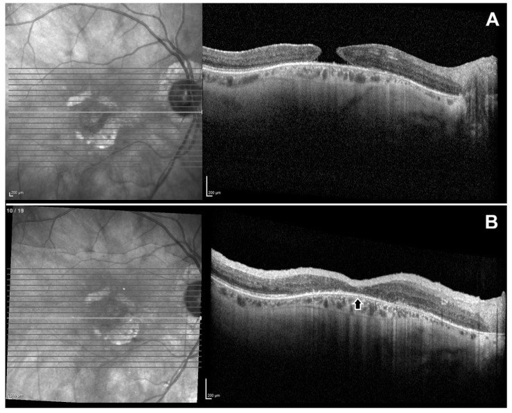
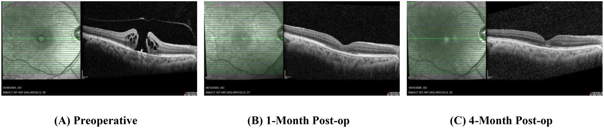

1429 — Lỗ hoàng điểm thứ phát sau mổ ROP/bong võng mạc phức tạp: màng ối & vật liệu sinh học bịt lỗ / Secondary macular hole: amniotic membrane and biologic scaffolds
Tags: pattern:lo-hoang-diem pattern:lo-hoang-diem-thu-phat pattern:bung-teo-vong-mac pattern:thieu-ILM pattern:co-keo-sau-cuc vung:hoang-diem vung:vong-mac vung:dich-kinh protocol:OCT protocol:PPV protocol:ILM-peel protocol:manh-oi protocol:dau-silicone score:Gass score:CLOSE
Mức chắc chắn (certainty): tổng hợp y văn (literature synthesis) — số liệu lấy từ 1 tổng quan hệ thống 18 nghiên cứu/221 mắt dùng màng ối (human amniotic membrane, hAM), 1 loạt 10 mắt màng ối đặt trên võng mạc (epiretinal), 1 ca đầu tay dùng hydrogel màng ối bơm, 1 ca nhi, 1 loạt 3 ca cắt võng mạc thư giãn + ghép võng mạc tự thân, và 1 bài tổng quan kỹ thuật. Không có RCT so sánh trực tiếp màng ối với ghép võng mạc tự thân (autologous retinal transplant, ART) hay vạt ILM; phần chọn kỹ thuật là tổng hợp có suy luận, đã ghi rõ. Ca ROP cụ thể lấy từ bài 1415 (2 mắt lỗ hoàng điểm thứ phát trong 15 mắt bong võng mạc muộn sau ROP).
Vì sao bài này quan trọng: bài 1415 vừa chốt rằng mắt ROP “đã hồi phục” vẫn có thể bong muộn và 2/15 mắt (13%) bong tái phát vì lỗ hoàng điểm thứ phát, được xử lý bằng màng ối — nhưng chỉ ở mức một hàng ma trận. Khi lỗ hoàng điểm xuất hiện trên mắt đã mất ILM, đã bơm dầu, có co kéo sau cực, kỹ thuật chuẩn (bóc ILM + vạt ILM) không còn áp dụng được: đây là lúc phải chọn giữa màng ối, ghép võng mạc tự thân, cắt võng mạc thư giãn hoặc chấp nhận theo dõi. Chọn sai dẫn tới mổ lần 3–4, dầu tồn lưu, teo nhãn cầu; chọn đúng thì 91–100% lỗ đóng nhưng chỉ 66% cải thiện thị lực — con số này phải nói trước với gia đình.
1. Tổng quan bệnh học – cơ chế hình ảnh – vì sao “đã mổ bong võng mạc” lại sinh lỗ hoàng điểm
- Tần suất: lỗ hoàng điểm (macular hole, MH) xuất hiện sau bong võng mạc có lỗ (rhegmatogenous retinal detachment, RRD) ở 1–3% ca; tỷ lệ tăng khi có tăng sinh thể kính–võng mạc (proliferative vitreoretinopathy, PVR) — PVR là yếu tố nguy cơ được ghi nhận rõ. Trong loạt 15 mắt bong muộn sau bệnh võng mạc sinh non (retinopathy of prematurity, ROP) đã hồi phục, 2 mắt (13%) bong tái phát do lỗ hoàng điểm thứ phát sau khi đã áp võng mạc; cả 15 mắt đều được cắt dịch kính + dầu silicone.
- Vì sao lỗ hình thành: hoàng điểm là điểm mỏng nhất của võng mạc (~0,25 mm ở hố trung tâm) và không có mạch máu. Sau bong, lớp photoreceptor mất dinh dưỡng, lớp sợi thần kinh và màng giới hạn trong (internal limiting membrane, ILM) bị co kéo; khi võng mạc áp lại, vùng hoàng điểm có thể teo, mỏng, dính chắc vào dịch kính còn sót — một lực nhỏ cũng đủ xé thủng. Ở mắt ROP, thêm võng mạc ngoại vi không có mạch (persistent avascular retina) và nhãn cầu dài ra theo tuổi, tạo lực căng ly tâm mạn tính.
- Vì sao mổ chuẩn thất bại: kỹ thuật kinh điển là bóc ILM + vạt ILM + khí. Nhưng ở mắt đã mổ bong võng mạc/ROP, ILM đã bị bóc gần hết — không còn “vật liệu” để làm vạt; bờ lỗ teo, cứng, thiếu biểu mô sắc tố (RPE) lành, nên mép không thể trượt vào giữa. Bài tổng quan kỹ thuật ghi rõ: vạt ILM không thể dùng khi ILM đã bị lấy hoàn toàn; tỷ lệ phải mổ lại sau thất bại vạt ILM chỉ 4–5%, nhưng khi đã thất bại thì phải chuyển sang vật liệu khác.
- Vì sao màng ối thay được ILM: hAM là lớp trong cùng của màng thai, gồm 1 lớp biểu mô + màng đáy dày + chất nền không mạch. Màng đáy chứa collagen IV/VII, laminin, fibronectin — đúng thành phần ILM; chất nền tiết EGF, bFGF kích thích biểu mô và tế bào Müller; hAM ức chế TGF-β (giảm xơ hóa, giảm co kéo) và có IL-1 receptor antagonist (giảm viêm). hAM không biểu hiện kháng nguyên HLA nên ít bị thải. Vì vậy hAM vừa là giá đỡ cho tế bào trượt vào, vừa là nút bịt cơ học chặn dịch đi qua lỗ.
- Vì sao thấy được trên OCT: hAM là mô collagen không mạch, phản xạ cao hơn võng mạc thần kinh và không có tín hiệu mạch máu. Trên OCT, graft là dải tăng phản xạ nằm dưới hoặc trên võng mạc, hòa vào bờ lỗ; khi lỗ đóng, đường viền hoàng điểm được tái lập nhưng lớp ellipsoid zone (EZ) thường khuyết vì photoreceptor đã mất. Vì vậy “đóng” trên OCT không đồng nghĩa “nhìn thấy”.
- Ngưỡng định lượng nằm lòng:
- Kích thước lỗ: đường kính tối thiểu (minimum linear diameter, MLD) > 400 µm = lỗ lớn; ≥ 535 µm = X-large theo CLOSE; 800 < MLD ≤ 1.000 µm** = XX-large; **> 1.000 µm = giant. Loạt màng ối epiretinal có MLD 715 ± 212 µm, đường kính đáy 1.114 ± 258 µm — tức toàn lỗ rất lớn.
- Kết quả màng ối (gộp): 18 nghiên cứu/221 mắt, đóng lỗ chung 93% (206/221); lỗ tái phát/không đóng sau mổ: 91% (163 mắt); lỗ kèm bong võng mạc: 95% (42 mắt); lỗ lớn: 100% (17 mắt); cận thị nặng: 92% (96 mắt). Cải thiện thị lực: 66% ở nhóm tái phát/không đóng, 93% ở nhóm lỗ kèm bong võng mạc.
- Biến chứng gộp: chỉ 7 ca trong 221 mắt — rách võng mạc ngoại vi 1, teo toàn lớp 1, tân mạch hắc mạc 1, phù hoàng điểm dạng nang 2, dầu silicone dưới võng mạc 1.
- Loạt epiretinal 10 mắt: đóng 100%; 70% có sắp xếp lại lớp trong/ngoài; logMAR 1,60 ± 0,37 → 1,00 ± 0,45 (p < 0,001); theo dõi 7 tháng (3–14); không trôi graft, không thải.
- Hydrogel màng ối bơm (ca đầu tay): lỗ 572 µm (Gass 4); đóng type 1 sau 1 tháng; thị lực 20/200 → 20/80 (1 tháng) → 20/40+1 (4 tháng); mfERG ring 1 34,19 nV/deg², N1 40,2 ms (bình thường 36,8–46,4 ms).
- Màng ối ở trẻ: ca lỗ hoàng điểm mạn tính, graft nhét dưới võng mạc, dầu silicone; thị lực cuối 20/70, graft tích hợp, lớp ngoài võng mạc còn khuyết.
2. Mẫu hình + chẩn đoán phân biệt theo bối cảnh (Gamut)
Bốn câu hỏi trước khi mổ: (1) lỗ thật hay giả? (2) ILM còn hay đã mất? (3) có bong võng mạc/PVR/co kéo không? (4) mắt đang có dầu, khí hay không?
- Nhóm A — lỗ thứ phát sau bong võng mạc/ROP (bài này): lỗ trung tâm, bờ teo và dày, thường không còn ILM, có dầu silicone và/hoặc đai củng mạc; bong có thể đã áp nhưng lỗ vẫn mở. Đây là nhóm không thể vạt ILM.
- Nhóm B — lỗ tái phát sau bóc ILM: lỗ không đóng sau mổ đầu, bờ tròn, cứng, mất ILM, không co kéo nặng; màng ối hoặc ART là lựa chọn.
- Nhóm C — lỗ lớn nguyên phát: MLD > 800 µm, bờ mỏng nhưng còn ILM; có thể vạt ILM hoặc màng ối/ART.
- Nhóm D — lỗ + bong võng mạc/PVR: có màng co kéo, dây xơ, võng mạc cứng; cần cắt võng mạc thư giãn (relaxing retinectomy) ± ghép võng mạc tự thân; màng ối đơn thuần không giải quyết lực co.
- Nhóm E — lỗ do chấn thương: bờ rách, phù, có thể kèm bong hắc mạc/vỡ nhãn cầu; chờ vết thương ổn định, thường cần màng ối/ART.
- Nhóm F — lỗ do cận thị nặng/staphyloma: cầu sau lồi, võng mạc mỏng, axial length > 26,5 mm; màng ối/ART, kết quả kém hơn.
- Nhóm G — lỗ do macular telangiectasia type 2: lỗ kèm mạch máu bất thường, sắc tố, màng neovascular; cần OCT-A/FA trước khi can thiệp.
- Nhóm H — bắt chước (không phải lỗ thật): pseudohole do màng trước võng mạc (ERM) — OCT có lõm nhưng võng mạc ngoài còn liên tục; lamellar hole — khuyết một phần, không thủng; nang hoàng điểm — thành nang, không mất mô trung tâm. Nhóm này không mổ.

Ca lỗ hoàng điểm không đóng sau mổ bong võng mạc + dầu silicone. (A) Đáy mắt trước mổ: võng mạc áp, còn dầu trong dịch kính, lỗ hoàng điểm lớn. (B) Sau mổ: mảng màng ối lớn phủ hoàng điểm. (C) OCT trước mổ: lỗ toàn lớp, bờ teo. (D) OCT sau 2 tháng: lỗ đóng hoàn toàn, graft tích hợp, các lớp trong/ngoài sắp xếp lại. Nguồn: Doguizi S et al., J Clin Med 2026 (PMC12942158) Fig. 2, CC BY 4.0.3. Bảng so sánh phân biệt (ma trận đối chiếu)
| Thực thể (entity) | Hình ảnh điển hình (OCT/đáy mắt) | Chốt vào (rule-in) | Chốt loại (rule-out) | Gợi ý xác nhận |
|---|---|---|---|---|
| Màng ối — nút dưới võng mạc (subretinal hAM plug) | Graft tăng phản xạ nằm dưới bờ lỗ, lấp kín defect; bờ lỗ áp vào graft | Lỗ toàn lớp, ILM đã mất, MLD ≥ 400–700 µm; đóng 91% ở lỗ tái phát và 95% ở lỗ kèm bong | Võng mạc còn ILM tốt + lỗ < 400 µm → vạt ILM đơn giản hơn; nhiễm trùng/thiếu máu võng mạc → không đặt graft | OCT qua trung tâm; đo MLD/đường kính đáy; kiểm tra ILM 360° |
| Màng ối — miếng đắp trên võng mạc (epiretinal hAM patch) | Mảng tăng phản xạ phủ mặt trong hoàng điểm, bờ lỗ áp lại; graft có thể thấy rõ nhiều tháng | ILM đã mất, lỗ lớn, bờ teo, cần che phủ rộng; đóng 100% (10/10), logMAR 1,60 → 1,00 | Có màng co kéo/PVR dày → cần cắt màng/thư giãn trước; lỗ nhỏ còn ILM → không cần | OCT mặt cắt + en face; chụp lại 1–3–6 tháng |
| Vạt ILM (inverted ILM flap) | Vạt ILM phủ lỗ, tăng phản xạ nông; lỗ đóng > 90% ở lỗ đơn giản | Còn ILM quanh lỗ, MLD < 800 µm, không có PVR | ILM đã bóc hoàn toàn → không thể làm vạt (đây là lý do chính thất bại ở mắt đã mổ) | Bóc ILM xanh; OCT trước mổ xác nhận ILM còn |
| Ghép võng mạc tự thân (ART) | Miếng võng mạc toàn lớp dày, tăng phản xạ, lấp lỗ; donor site ở ngoại vi | Lỗ XXL/giant (> 800–1.000 µm), lỗ tái phát, lỗ + bong võng mạc; đóng 91% nguyên phát, 93% tái phát, 88% kèm bong | Bệnh võng mạc thiếu máu/tân mạch/viêm, sẹo hắc mạc lan rộng (không đủ mô cho) | OCT; siêu âm B-scan nếu không thấy đáy; theo dõi donor site |
| Cắt võng mạc thư giãn + ART | Võng mạc được cắt bớt hình vòng cung, graft từ mép cắt nhét vào lỗ; dầu 5.000 cSt | Bong phức tạp + PVR + lỗ hoàng điểm, võng mạc cứng/co ngắn; 3/3 ca đóng lỗ + áp võng mạc | Võng mạc áp, bờ lỗ di động, không PVR → màng ối/ART đơn thuần | OCT + B-scan; đánh giá PVR trước mổ; theo dõi áp võng mạc |
| Vật liệu khác: vỏ thể thủy tinh, bao Tenon, lenticule giác mạc | Mô tự thân tăng phản xạ trong lỗ; kỹ thuật mới, loạt nhỏ | Không có màng ối, lỗ tái phát, cần vật liệu thay thế | Chưa có bằng chứng so sánh; không dùng khi nhiễm trùng/thiếu mô | OCT; chỉ trong nghiên cứu/kinh nghiệm |
| Theo dõi (không mổ) | Lỗ toàn lớp nhưng không có triệu chứng, mắt không còn khả năng thị lực, hoặc lỗ đã đóng type 2 | Bệnh nhân lớn tuổi, mắt độc nhất kém, không còn chỉ định chức năng | Lỗ mới, thị lực còn, mắt còn tiềm năng → can thiệp | OCT 3–6 tháng; hỏi triệu chứng |

Sơ đồ mặt cắt: (A) nút màng ối dưới võng mạc; (B) miếng đắp trên võng mạc; (C) nút không xuống dưới võng mạc; (D) kỹ thuật hai lớp. Chọn kiểu nào phụ thuộc độ lớn lỗ, độ dày bờ và khả năng tiếp cận dưới võng mạc. Nguồn: Avcı R et al., Turk J Ophthalmol 2026 (PMC13514483) Fig. 4, CC BY-NC-ND 4.0 — nguyên bản, không crop/ghép.4. Protocol: chọn bệnh nhân, kỹ thuật, tamponade và theo dõi
Trước mổ (bắt buộc):
- SD-OCT hoàng điểm (61 lát, khoảng cách 120 µm + 6 lát xuyên tâm): đo MLD, đường kính đáy, chiều cao lỗ, độ dày bờ, EZ/ELM còn hay mất, ILM còn quanh lỗ hay không.
- Đáy mắt góc rộng (UWF) + B-scan nếu không thấy đáy: tìm bong võng mạc, PVR, dầu, đai củng mạc, lỗ ngoại vi.
- Sinh trắc trục nhãn cầu (axial length) nếu cận thị; nhãn áp; đánh giá tình trạng dầu (nhũ tương, thiếu thể tích).
- Đồng thuận trước mổ: nói rõ đóng lỗ 91–100% nhưng cải thiện thị lực chỉ ~66% ở lỗ tái phát; có thể cần 2–3 lần mổ; dầu có thể phải giữ.
Kỹ thuật (tóm tắt thực hành):
- 25G PPV (hoặc 23G), lấy dầu silicone nếu đang có và cần thao tác; bóc ERM/PVR triệt để, cắt dây co kéo.
- Xác nhận ILM: nếu còn ILM quanh lỗ → cân nhắc vạt ILM; nếu ILM đã mất → chuyển màng ối/ART.
- Màng ối: cắt miếng 1–3 mm (lớn hơn lỗ ~1–2 mm mỗi bên); phân biệt mặt stroma dính (đặt về phía võng mạc/RPE) và mặt màng đáy; đưa qua trocar 23–25G.
- Nút dưới võng mạc: tạo bong nhẹ hoặc dùng mép lỗ, nhét graft xuống dưới võng mạc, mặt chorion dính quay về RPE.
- Miếng đắp trên võng mạc: đặt graft phủ lên lỗ, mặt stroma quay về võng mạc; đơn giản hơn, ít can thiệp RPE.
- PFCL (perfluoro-n-octane) để dàn phẳng graft và bờ lỗ; trao đổi PFCL–khí/dầu.
- Tamponade: SF6 20% là lựa chọn phổ biến nhất, sau đó không khí, dầu silicone, C3F8; nếu có bong võng mạc/PVR → dầu silicone 5.000 cSt.
- Tư thế: nằm sấp 1–3 ngày (tùy khí/dầu và vị trí lỗ); trẻ nhỏ/không hợp tác → cân nhắc dầu thay khí.
Sau mổ:
- OCT 1–3–6–12 tháng: phân loại đóng type 1 (võng mạc liên tục) vs type 2 (bờ dính nhưng đáy phẳng, không có võng mạc trung tâm); đo EZ/ELM; tìm trôi graft, dầu dưới võng mạc, lỗ tái mở.
- Lấy dầu khi võng mạc ổn định 2–6 tháng (hoặc sớm hơn nếu nhũ tương/tăng nhãn áp); theo dõi nhãn áp, đục dầu, dầu tiền phòng.
- Thất bại: trôi graft 3–6% (gộp), cao hơn ở lỗ lớn/PVR; có thể đặt lại graft hoặc chuyển ART.

Phác đồ: lỗ < 800 µm → kiểm tra ILM còn quanh lỗ; còn → vạt ILM; mất → ART, màng ối, vỏ thể thủy tinh, bao Tenon. Lỗ ≥ 800 µm → nhánh không vạt ILM. Đây là khung tham khảo, không phải luật tuyệt đối. Nguồn: Avcı R et al., Turk J Ophthalmol 2026 (PMC13514483) Fig. 6, CC BY-NC-ND 4.0 — nguyên bản.flowchart TD
A[Lỗ hoàng điểm toàn lớp] --> B{ILM còn quanh lỗ?}
B -->|Còn| C[Vạt ILM / temporal inverted flap]
B -->|Mất| D{MLD và bối cảnh}
D -->|"< 800 µm, không PVR"| E[Màng ối: nút dưới hoặc miếng đắp trên]
D -->|"> 800 µm hoặc tái phát"| F[ART hoặc màng ối]
D -->|"Bong + PVR + võng mạc cứng"| G[Cắt võng mạc thư giãn + ART + dầu 5.000 cSt]
E --> H[Tamponade: SF6/không khí/dầu]
F --> H
G --> H
H --> I[OCT 1-3-6-12 tháng: type 1 vs type 2, EZ, trôi graft]
5. Biến thể bình thường và cạm bẫy
- Pseudohole do ERM: OCT có lõm trung tâm nhưng võng mạc ngoài liên tục, không có dịch xuyên qua; không mổ. Đây là bẫy hay gặp ở mắt đã mổ bong võng mạc vì ERM sau mổ rất phổ biến.
- Lamellar hole: khuyết một phần bề dày, đáy còn võng mạc; đừng đo MLD như lỗ toàn lớp.
- Graft màng ối trên OCT: dải tăng phản xạ có thể bị đọc nhầm là máu dưới võng mạc, xơ hóa, hoặc dầu dưới võng mạc. Graft thường không có bóng lưng (shadowing); dầu dưới võng mạc là giọt tròn, tăng phản xạ mạnh, có bóng. So sánh ảnh 1 tháng và 3 tháng: graft mờ dần và hòa vào võng mạc.
- Đóng type 2: bờ lỗ dính vào RPE nhưng không có võng mạc thần kinh trung tâm — trên OCT là đáy phẳng, mất lớp ngoài; đừng gọi là “đóng hoàn toàn” nếu chưa thấy võng mạc liên tục qua trung tâm.
- Dầu silicone dưới võng mạc: biến chứng đã gặp trong gộp (1/221); trên OCT là giọt tăng phản xạ, bóng lưng, có thể gây thị lực kém, phù hoàng điểm; cần lấy dầu/bơm PFCL.
- Trôi graft: thường trong tháng đầu, trên OCT thấy mảng tăng phản xạ lệch khỏi lỗ; tỷ lệ gộp 6%, màng ối tươi đông lạnh 3%; lỗ lớn/PVR cao hơn. Đừng chờ “tự đóng” nếu graft đã trôi.
- Trẻ nhỏ: nhược thị là giới hạn chính; dầu silicone giúp tránh tư thế nhưng không thay được tập nhược thị; theo dõi nhãn áp, dầu, refractions.
- Không dùng màng ối khi: nhiễm trùng nội nhãn, võng mạc thiếu máu/tân mạch hoạt động, sẹo hắc mạc lan rộng (không đủ mô lành để graft tích hợp).
- Phản biện quan trọng: phân tích gộp CLOSE cho thấy ở lỗ giant, ART cải thiện thị lực có ý nghĩa còn hAM và hydrodissection thì không — nghĩa là đóng lỗ bằng màng ối rất tốt về giải phẫu, nhưng lợi ích chức năng chưa chắc bằng ART. Đừng hứa “nhìn lại được” chỉ vì lỗ đóng.

Ca trẻ có lỗ hoàng điểm mạn tính: (A) đáy mắt 1 tháng sau mổ, dưới dầu — nút màng ối (mũi tên xanh) tích hợp; (B, C) OCT: lỗ đóng, đường viền hoàng điểm tái lập nhưng lớp ngoài võng mạc teo; (D–F) 7 tháng sau lấy dầu: graft còn đúng vị trí, sắc tố dưới hoàng điểm, lỗ đóng, lớp ngoài còn khuyết. Nguồn: Ownagh V et al., Am J Ophthalmol Case Rep 2025 (PMC11788725) Fig. 3, CC BY-NC-ND 4.0 — nguyên bản.6. Tự lượng giá — Blind Quiz
Ca 1 — Nam trưởng thành, đã mổ bong võng mạc, còn dầu silicone, lỗ hoàng điểm không đóng. Nhìn ảnh, mô tả trước khi mở đáp án.
- Gợi ý: mắt đã mổ bong võng mạc + dầu; lỗ lớn, bờ teo; đã bóc ILM.
- Hỏi: (1) Dấu hiệu chính trên OCT? (2) Vì sao không làm vạt ILM? (3) Ba lựa chọn thay thế và tiêu chí chọn?
Bấm để hiện đáp án (findings + chẩn đoán)
- Findings: (A) võng mạc áp dưới dầu, lỗ hoàng điểm lớn; (C) OCT: lỗ toàn lớp, bờ teo, không thấy ILM quanh lỗ; (B) sau mổ có mảng màng ối lớn phủ hoàng điểm; (D) OCT 2 tháng: lỗ đóng hoàn toàn, graft tích hợp, lớp trong/ngoài sắp xếp lại.
- Chẩn đoán: lỗ hoàng điểm thứ phát sau mổ bong võng mạc, điều trị bằng màng ối đặt trên võng mạc (epiretinal hAM patch) + C3F8.
- Vì sao không vạt ILM: ILM đã bị bóc ở lần mổ trước; không còn mô để làm vạt.
- Ba lựa chọn: màng ối (đóng 91–100%, đơn giản), ART (lỗ XXL/giant, đóng 88–93%), cắt võng mạc thư giãn + ART (nếu có PVR/bong). Chọn màng ối vì lỗ lớn nhưng không có PVR hoạt động, bờ còn di động.
- Nguồn ảnh: Doguizi S et al., J Clin Med 2026 (PMC12942158) Fig. 2, CC BY 4.0.
Ca 2 — Bệnh nhân lớn tuổi, lỗ hoàng điểm tái phát sau 2 lần mổ, bờ lỗ trắng teo. OCT trước và sau màng ối:

- Hỏi: (1) Bờ lỗ có đặc điểm gì? (2) Vì sao đóng lỗ vẫn có thể không cải thiện thị lực? (3) Theo dõi gì trên OCT sau mổ?
Bấm để hiện đáp án
- Findings: (A) lỗ toàn lớp, bờ teo, mất lớp ngoài, không có ILM; (B) sau 2 tháng: lỗ đóng, graft tích hợp, đường viền hoàng điểm tái lập (mũi tên), nhưng EZ/ELM còn khuyết.
- Chẩn đoán: lỗ hoàng điểm tái phát/không đóng, điều trị màng ối; đóng giải phẫu nhưng thị lực phụ thuộc vào photoreceptor còn lại, không phải vào độ kín của lỗ.
- Theo dõi: type 1 vs type 2, EZ/ELM, trôi graft, dầu dưới võng mạc, lỗ tái mở; đo lại MLD nếu lỗ mở.
- Nguồn ảnh: Doguizi S et al., J Clin Med 2026 (PMC12942158) Fig. 1, CC BY 4.0.
Ca 3 — Nam 62 tuổi, lỗ hoàng điểm 572 µm, được bơm một chất lỏng vào mắt thay vì đặt màng ối. Nhìn OCT theo thời gian:

- Hỏi: (1) Chất được bơm là gì? (2) Vì sao 1 tháng sau không còn thấy chất trên OCT? (3) Dấu hiệu nào cho thấy phục hồi chức năng?
Bấm để hiện đáp án
- Findings: (A) lỗ toàn lớp 572 µm, nang trong võng mạc; (B) 1 tháng: đóng type 1, đường viền hoàng điểm tái lập, hydrogel không còn thấy; (C) 4 tháng: đóng type 1 duy trì, EZ hồi phục dần.
- Chẩn đoán: hydrogel màng ối khử tế bào (decellularized amniotic membrane hydrogel, 10 mg/mL) bơm vào sau bóc ILM + SF6; chất tự phân tán/tan, không phải graft nguyên tấm, nên không thấy như dải tăng phản xạ.
- Phục hồi chức năng: thị lực 20/200 → 20/80 → 20/40+1; mfERG ring 1 34,19 nV/deg², N1 40,2 ms; không biến chứng.
- Nguồn ảnh: Juhong J et al., Int J Retina Vitreous 2026 (PMC13563838) Fig. 1, CC BY 4.0.
Bài liên quan chéo
- 1415 – Bong võng mạc muộn ở mắt ROP đã hồi phục (2 mắt lỗ hoàng điểm thứ phát, xử lý bằng màng ối)
- 1406 – Tái bong co kéo sau mổ ROP
- 1402 – Bong võng mạc sau viêm nội nhãn
- 1432 – Thay dầu silicone (bơm thiếu thể tích, nhũ tương)
- 1433 – Viêm nội nhãn ở mắt bơm dầu
- 1417 – Khi nào giữ dầu silicone vĩnh viễn
Không dùng để chẩn đoán độc lập khi chưa có người hướng dẫn.